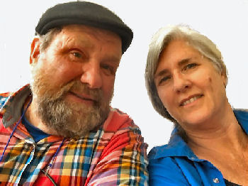

Weaving Studio and Shop
Located in a beautiful old 1790's Federal home on the coastal Pemaquid pennisula the weaving studio and shop is cozy in the winter and cool in the summer. and I enjoy meeting customers as they drop in during the day.
It is my pleasure to create custom items. I work with decorators as well as home owners on their projects
Maine Village Weaver has an Etsy Shop
My work is also available at these these selected shops:The early patterns are the foundation of my knowledge and techniques. I still love weaving the classics and now have branched out with my own personal style.
In the late 1970’s I was a young mother living on an island north of Seattle in Washington State and my husband, Andy, was away King crab fishing in Alaska for months at a time. The long stretches of time and solitude allowed me to really focus on my weaving. While keeping on eye on our young chillren I read books about weaving and practiced on my loom. Through trial and error was able to develop my abilities.
After moving back East my husband worked as a full time blacksmith and we traveled together to craft shows featuring early Americana. My work centered on textiles with early American inspired patterns. It was a rich time in our lives meeting other craftspeople and exchanging wares and stories with each other. We were featured in the magazines "Colonial Homes","Country Living" and "Country Home".
It is my pleasure to create custom items. I work with decorators as well as home owners on their projects.
I sell some of my work in an Etsy Shop and also whole sale some of my work to these selected shops:
Perennial Style Sturbridge 138 Green St. Worcester, Massachusettes
Venn and Maker 75 Washington Street Portland, Maine Just a Little Bit Country Waukesha, Wisconsin
The colors of my work reflect the beautiful Maine coast where I gather local plants for hand dying.
Our family is a creative one.
Andy operates Scottish Wrought Iron
